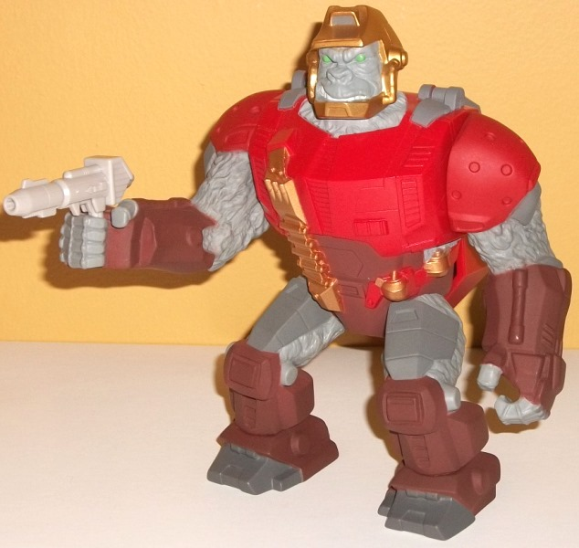
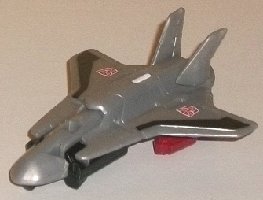
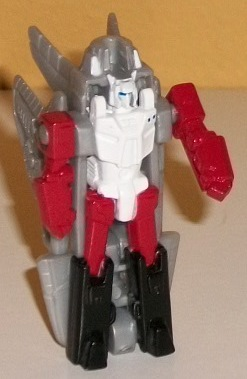
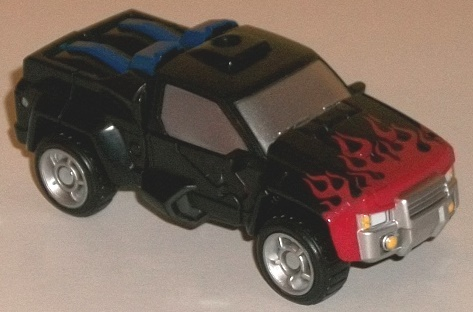
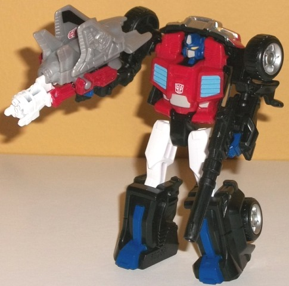

Optimus
Prime w/ Hi-Q (Double Pretender) [TFCC 2017 Subscription Service Exclusive)
Optimus
Prime w/ Hi-Q (Double Pretender) [TFCC 2017 Subscription Service Exclusive)
Allegiances
: Autobot
(NOTE: Because the following toys are repaints,
the rest of this is not a full-blown review. This mainly covers any changes
made to the toys and their color schemes, and merely compares them to the
original versions of these molds. For a review of BotCon 2015 Oilmaster's
Pretender Shell-- the mold used for Optimus Prime's Pretender Shell-- go
here
.
For a review on Generations Legends Swerve w/ Flanker-- the molds used
for Optimus Prime's inner robot and Hi-Q, respectively-- go
here
.)
Optimus
Prime (Pretender Shell)

Size
: Between Voyager and Ultra
(in terms of size/mass) (comes packed with
Pretender
Megatron w/ Spacewarp
)
Color Scheme
: Red, dark pale brown,
pale flat light gray, and some metallic gold, moderately dark flat gray,
light flat green, white, black, and light purplish gray
Individual Rating
: 7.3
Given that FunPub made
a completely new mold for Oilmaster, it wasn't all that unexpected that
they'd repaint it to get their money out of this mold. For the Pretender
shell, an ape works pretty well for Optimus Prime, given the whole Beast
Wars Optimus Primal connection, though the colors are a bit closer to "classic"
Optimus Prime's. (They're actually based on an alternate deco job shown
off for the Pretender shell shown at a BotCon back in the '90s.) Most of
the "core armor" is a very Prime-y red, with the gorilla fur being a rather
flat light gray, with some of the neighboring armor bits on the shoulders,
upper legs, and feet a slightly darker shade of the flat gray. There's
also some brown on his lower limbs and waist that is both dark and pale
at the same time, like it's been "sun-faded" a little. The last color that's
used to a fair extent is a really nice metallic gold, which is used on
the helmet, as well as the ammo clips and the canisters on his belt. I
particularly like how well the gold and red go together, and the brown
is a nice "earthy" shade to emphasize the gorilla connection a bit more.
I'm not all that fond of the shades of gray, though-- without the kind
of paint wash that Oilmaster had, it doesn't look that exciting, even if
it's not really all that odd for a gorilla. They also aren't different
enough to contrast against each other much. On the face there's some nice
white on the teeth and some light green eyes, the latter of which pops
pretty well against said gray. (I wish the green had been used a bit more
as accent color elsewhere.)
No mold changes have
been made to the "core" of the Pretender shell, but the weapons have been
changed from Oilmaster. This time around, Prime comes with an oddly purplish
gray-colored version of the classic Optimus rifle that came with "Thrilling
30th"
Orion Pax
, as well as the long black
gun that came with "Thrilling 30th"
Legends
Optimus Prime w/ Roller
. The black gun fits in nice and snugly into
his fists or on the storage peg holes on his back, but the larger Orion
Pax gun is a little difficult to fit into his fists-- the handle just isn't
quite long enough, so he ends up holding it at a slight angle. Not a huge
issue, but worth pointing out.
Hi-Q


Size
: Legends partner
Difficulty of Transformation
: Very
Easy
Color Scheme
: Light milky gray and
some black, white, moderately dark blue, and brick red
Individual Rating
: 5.6
Hi-Q is another homage
to a previous version of Optimus Prime-- namely, he was the Powermaster
for
Powermaster Optimus Prime
. This time around
he's a Targetmaster, and his bot mode has been repainted to match his G1
version extremely well, what with the white body, red arms and upper legs,
and black lower legs. He's also got a nice blue on his visor, and even
two tiny blue dots on the right side of his chest, just like the original.
It's a pretty decent (if not outstanding) color scheme for robot mode,
but unfortunately the main plastic color for his toy is that bland light
milky gray I despise so much. Making the color more metallic really would've
worked wonders in vehicle mode, which in particular is just far too bland
for me. The black stripes on the wings and the Autobot symbols certainly
help break things up a little, but generally the robot mode is what this
toy's all about.
No mold changes have
been made to Hi-Q.
Optimus
Prime (Inner Robot)


Size
: Legend
Difficulty of Transformation
: Very
Easy
Color Scheme
: Black, red, and some
white, dark blue, silver, light glossy gray, pale light blue, and yellow
Individual Rating
: 8.5
A toy with this alt mode
may be a little different from your typical Optimus Prime, but the Pretender
shell was molded to specifically fit this mold inside the shell, and so
this mold's what FunPub can work with-- and generally it works quite well.
Like several other aspects of this toy, it's an homage to multiple previous
Optimus Primes. The more "ruff 'n tuff" truck mode, the wide shoulders,
and the grills on the robot chest are an homage to
Armada
Prime
, whereas the darker color scheme and flames on the front of the
truck mode are homages to G2 "Laser" Optimus Prime. It's a good color scheme,
though, with aspects of Optimus Prime's usual red and dark blue, particularly
in robot mode. The red chest works well against the light blue vents and
the bits of gray paint, and contrasts very well against all the black plastic.
The white upper legs also work great as another "surprise reveal" color
in robot mode, and the dark blue on the legs, head, and hands is pretty
accurate to previous Optimus Primes, but it's a bit too dark against the
black and doesn't quite pop as much as I wish it would have. As far as
more vehicle-specific paint, the red flames on the front look marvelous,
and there's also silver on the wheel hubs, front grill, and windows, which
keeps Optimus' alt mode from looking anything but boring. There's also
just a bit of yellow on the headlights and robot eyes, and looks good.
Optimus has a new headsculpt,
and of course it's your typical Optimus head. It's pretty spot-on, with
the gray faceplate and forehead vent looking quite nice against the dark
blue and yellow. No issues with the headsculpt here-- otherwise, Optimus
has no mold changes made.
Optimus Prime w/ Hi-Q (Double Pretender)
Bio
:
MOTTO: "Freedom is the right of all
sentient beings."
Optimus Prime steps into the next generation
of Transformers evolution as a Double Pretender! The strongest and wisest
of the Autobots, Optimus is dedicated to protecting all life forms. Now,
he has added a whole new level to his considerable arsenal using Pretender
and Targetmaster technology! His fearsome outer shell combines cybernetically-fused
musculature and high-density Cybertronic alloy to truly dominate the battlefield.
In the tropics or the urban jungle, this beast mode is capable of incredible
primal power and surprising stealth. When he carries a photon rifle, it
rarely sees use, as his fists are equally as powerful!
When outside his shell, Optimus Prime
carries a high-density ion cannon, and can take anything the Decepticons
might throw at him, thanks to his durabyllium-steel armor plating. His
new all-terrain vehicle mode keeps him rolling in even the harshest of
environments, while his Targetmaster partner, Hi-Q, converts into both
an aerial reconnaissance spy jet and a repeating particle beam cannon!
Adversaries should be wary of what Optimus can bring to the battlefield.
With his new capabilities, Optimus Prime continues to be both a respected
commander and a feared warrior!
Strength: 10.0
Intelligence: 9.0
Speed: 7.0
Endurance: 10.0
Rank: 10.0
Courage: 10.0
Fireblast: 8.0
Skill: 8.0
Double Pretender Optimus
Prime is an awesome and quite ingenious re-use of the Oilmaster toys/molds.
I think the Pretender shell and Hi-Q have a bit too much gray, though to
be fair those are both fairly accurate to the source material. The real
ingenious part here is just how many toys this version of Optimus is referencing--
Optimus Primal, Armada, Powermaster, G2 "Laser", classic G1, a cancelled
Pretender shell-- you've got almost half the history of the character all
here in one toy. Highly recommended, though not QUITE as much as Oilmaster.
Reviews by Beastbot
Back to BotCon/OTFCC
Exclusives Index